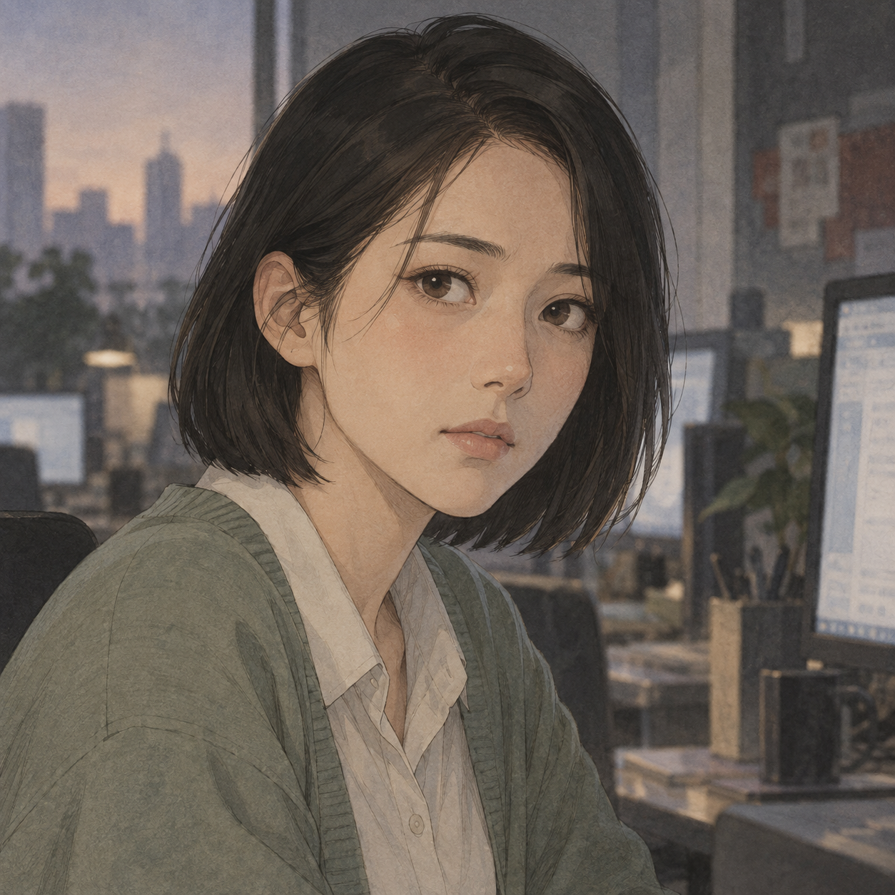
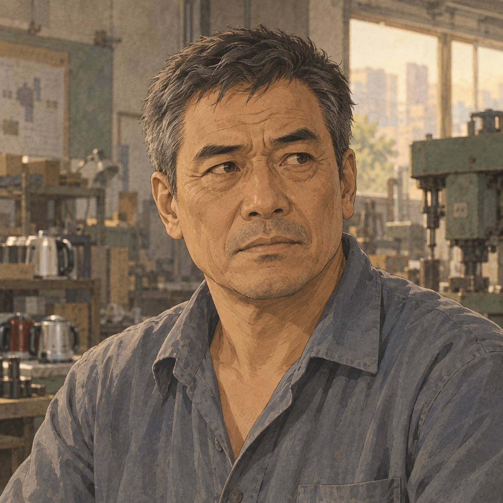
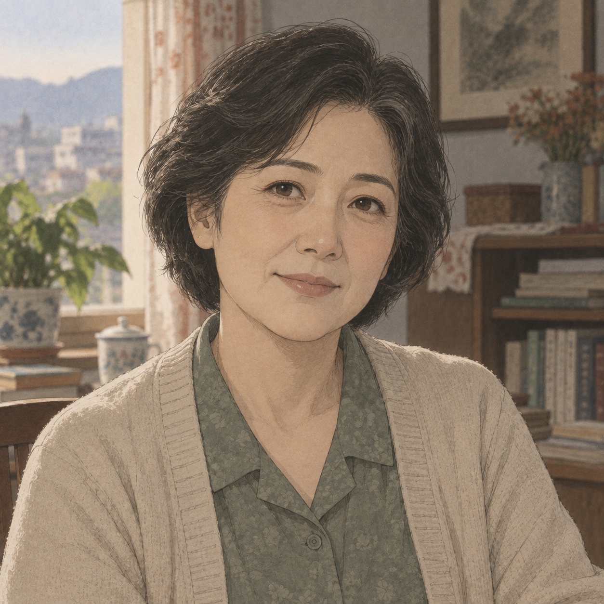
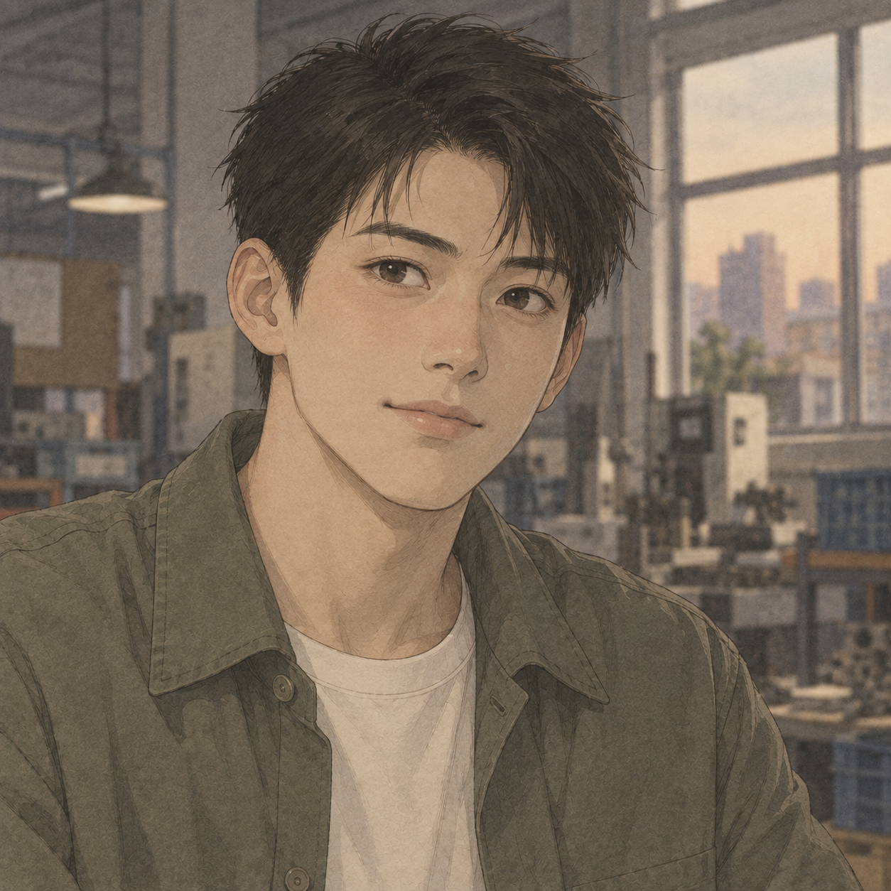
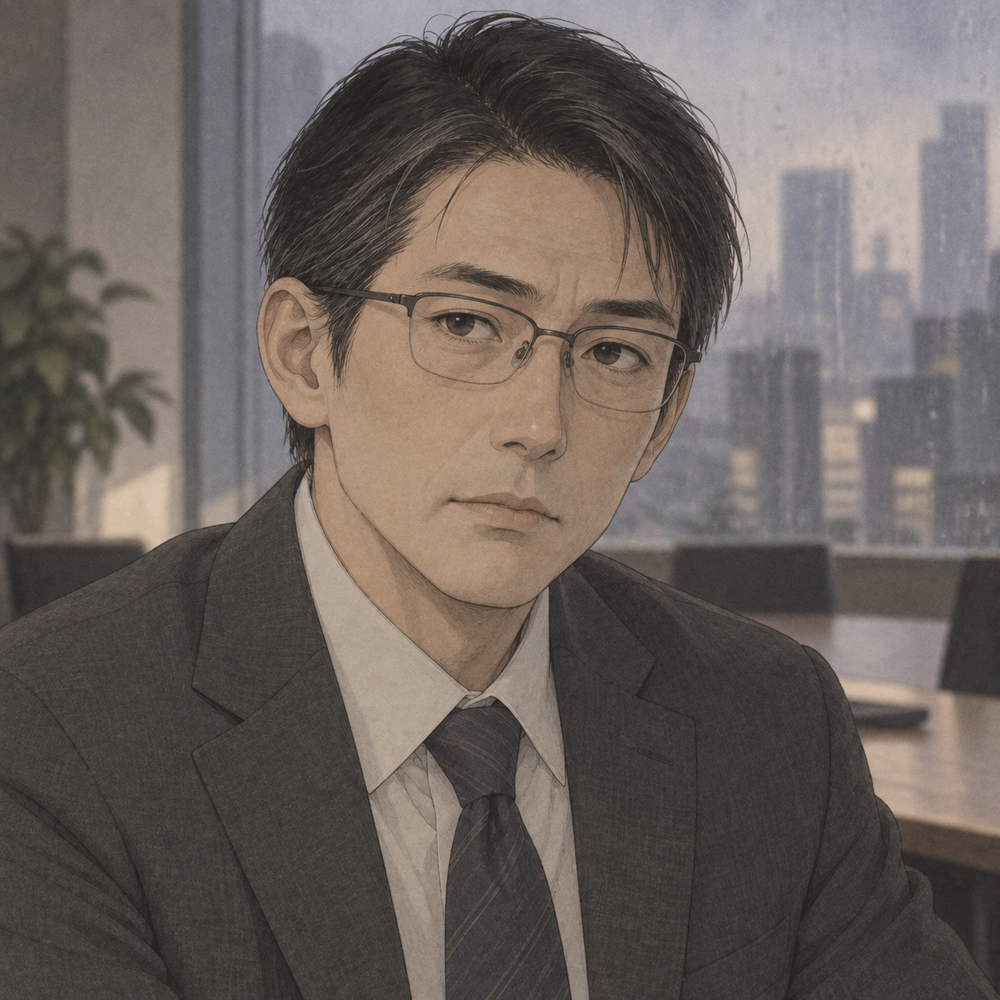
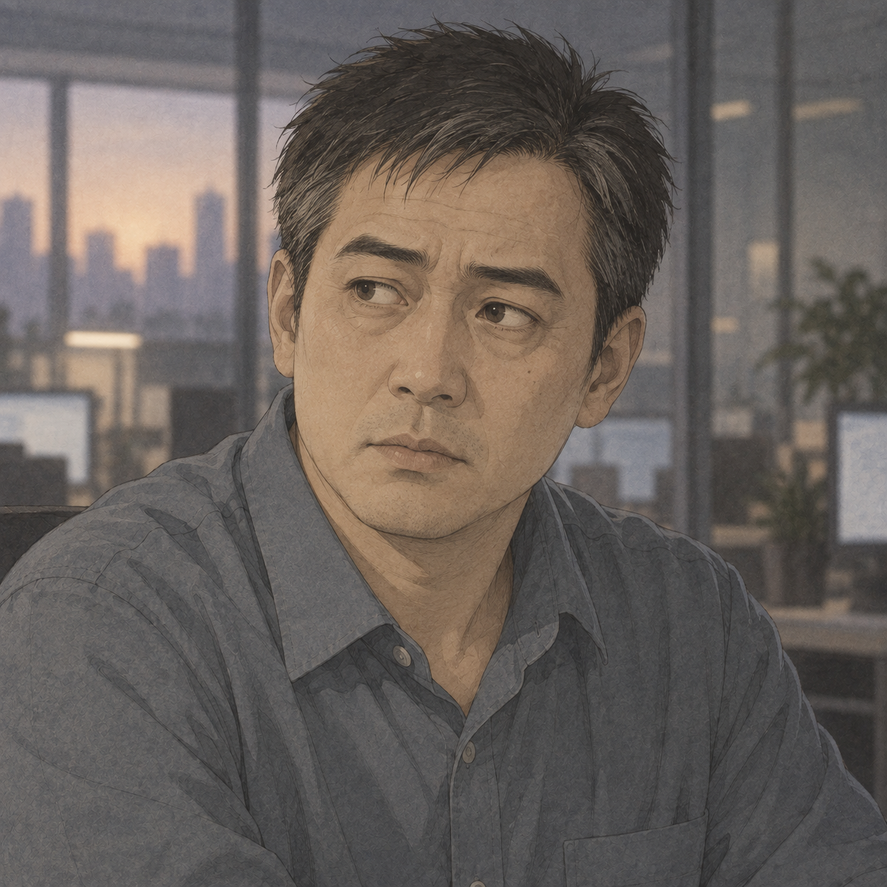

周以宁
信息与AI
谁来判断什么是真的
“从今天起，没有人再替我决定该看见什么。”
26岁，湖北某县人，新闻学本科毕业。她本想当记者，毕业那年新闻行业大规模收缩，只好先去武汉一家内容审核公司“过渡”，结果一干就是三年。父母在她小时候离异，她随母姓，由退休语文老师周素琴一手带大。她安静、敏感，对文字有很强的直觉。这让她成为最高效的审核员，也让她在夜里睡不着。
序章 · 03:40 武汉权力和边界不会消失，只会转移。
六条主线，从同一天展开。
六条主线，六个核心问题。

谁来判断什么是真的
“从今天起，没有人再替我决定该看见什么。”
26岁，湖北某县人，新闻学本科毕业。她本想当记者，毕业那年新闻行业大规模收缩，只好先去武汉一家内容审核公司“过渡”，结果一干就是三年。父母在她小时候离异，她随母姓，由退休语文老师周素琴一手带大。她安静、敏感，对文字有很强的直觉。这让她成为最高效的审核员，也让她在夜里睡不着。
序章 · 03:40 武汉技术属于谁，人该去还是留
“这边的墙倒了，那边的墙还在。”
31岁，江西农村出身，父亲在县城做过几十年钳工。他是村里第一个读到985硕士的人，现在是杭州一家中型大模型实验室的训练负责人。他务实，理想主义藏得很深，最大的骄傲是“我们用别人三分之一的算力做出了差不多的东西”。
序章 · 04:12 杭州在世界上做一个中国人意味着什么
“门开了，只意味着你可以走出去。”
本名苏晓蔓，26岁，成都人。她生在小满那天，名字取了谐音，身边的人都叫她小满。她是以宁的大学室友，在一家广告公司做短视频运营。外婆在九十年代移民温哥华，母亲当年因故留下，三十年没能再见，直到外婆去世。小满开朗、冲动、表达欲强，是那种“门一开就会第一个冲出去”的人。
序章 · 19:30 成都
实体经济和人情，在效率面前还剩多少
“机器不会犹豫，可我会。”
52岁，浙江义乌小家电厂老板。他初中毕业就出来闯，从摆地摊干到有三百个工人的厂子，这两年缩到九十人。厂里很多工人是跟了他十几二十年的湖北、江西老乡。他精明、讲义气、嘴硬心软，唯一的儿子郑一鸣学的是自动化专业。
序章 · 15:40 义乌没有指示的时候，责任属于谁
“以前有人写文件，现在没有了。”
48岁，湖北某县人社局副局长，与以宁和周老师同在一个县，在体制内干了二十三年。他谨慎、守规矩、不贪，最大的信条是老局长教的“最重要的是不犯错”。妻子在县医院当护士，儿子在读高中。
序章 · 22:40 湖北，某县全球南方的劳动者，如何面对两股浪潮的冲击
“那边丢了工作的人，要来这边做同一份工作。”
34岁，马尼拉人，外包公司内容审核团队主管，单亲妈妈，女儿上小学。父亲在中东做了二十年海外劳工，她从小在“家里的钱来自海外”的环境中长大。她坚韧、幽默，对自己的工作有种朴素的职业自豪感。
序章 · 11:20 马尼拉与主角相连，也从不同的位置见证这一天。

周以宁之母 · 县城老一代视角
“没了就回家，家里有米。”
周以宁的母亲，退休前教了三十一年语文，习惯先从语气里听新闻。九月二十一日早晨，她反复琢磨着“交还社会”四个字，随后拎着布袋去买米。女儿的工作没了，她没有追问太多，只告诉她：没了就回家，家里有米。
序章 · 07:00 湖北，某县
郑国富之子 · 年轻一代视角
“爸，我想去德国。”
郑国富唯一的儿子，26岁，自动化专业毕业，曾帮父亲挂着代理，与海外客户联系。九月二十一日，他找到一个德国工厂自动化岗位，远程面试有AI同传，下周就能进行。父亲刚从汇率变化里看见生意的转机，他也拿着手机推门进来，眼里亮着另一种希望。
序章 · 15:40 义乌与陆川相识 · 硅谷视角
“恭喜，以及一个问题。”
旧金山一家AI公司的产品负责人，习惯把中国大陆无法直接访问产品写作“已知限制”。网络开放后，新增用户、服务器扩容和安全与法律问题一齐涌来。忙过一个几乎无眠的夜晚，她给曾在学术会议上认识的陆川写了一封邮件。
序章 · 21:00 旧金山资本市场视角
“没有人知道真相。”
在上海的交易台前坐了八年，习惯从价格和消息里辨认市场的方向。九月二十一日，她第一次见到开盘三分钟后满屏皆绿，又看着银行股和券商股突然拉升。群里的解释彼此矛盾，她向经历过多次危机的部门老大求问，也没能得到一个确定的答案。
序章 · 09:30 上海
外国政府视角
“国境从来不是一条线，而是两扇门。”
东京入管厅课长。电子签证系统接连瘫痪，驻华使领馆的预估数字送进会议室，他面前的咖啡早已凉透。面对骤增的申请，欢迎游客与暂缓受理之间并没有现成答案。雨中的那个下午，他想起大学时读过的话：国境，是两扇门。
序章 · 15:00（东京时间） 东京
周以宁的前上司
“都回家吧。”
周以宁所在审核工作场所的主管，平时坐在大厅旁的玻璃隔间里。九月二十一日凌晨，关键词库逐行消失，一百多块屏幕同时安静下来。他捏着手机走到过道中央，看了大家很久。面对这场突然的变化，他只说了一句：“都回家吧。”
序章 · 03:40 武汉香港视角 · 流量与时间
“原因：已知。趋势：未知。”
40岁，在香港观塘一栋写字楼里的电讯公司网络运营中心值了十一年夜班。他盯着跨境和国际出口的带宽利用率，确保经过香港、连通大陆与世界的线路正常运转。九月二十一日，熟悉的潮汐不再回落。他知道，这只是其中一条河；交接班日志里，原因已知，趋势未知。
序章 · 23:59 香港，观塘家人、邻居、同事与旧识。
退休教师，周素琴的邻居；序章里买了四袋米。
小满的母亲，三十年未能与母亲重逢。
小满的外婆，九十年代移民温哥华。
陆川之父，县城工厂钳工出身。
波兰进口商，老郑合作多年的客户。
县人社局科员。
县医院护士，许建平之妻。
高中生，许建平之子。
小学生，玛丽索尔之女。
外包公司运营经理，玛丽索尔的上级。
林薇所在部门负责人。
人物简介以序章及作者提供的背景为限，不含后续剧情。
绘像为 AI 创作的二次元概念形象；外貌与服饰为艺术诠释。